|
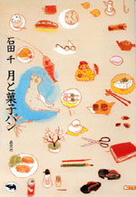
|
エッセイ | ||||||
| 月と菓子パン | |||||||
| 石田千 | |||||||
| 四六判 224頁 | |||||||
| 定価1890円 （本体1800円） | |||||||
| 4-7949- 6618-0 C0095 | |||||||
| 新しい女性エッセイスト誕生！ 気がつけば三十代の半ば、東京での一人暮らし。毎日は大きな変化はないけれど、小さな楽しみに満ちている。通勤の途中で出会う、町に生きる人、季節にやってくる渡り鳥、四季をめぐって咲き競う花。だれもが眺め見ているはずの日常の、ほんのひとときをグサリと切り取る、新東京点描エッセイ。 | |||||||
|
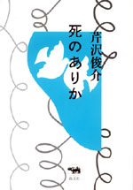
|
エッセイ | ||||||
| 死のありか | |||||||
| 芹沢俊介 | |||||||
| 四六判 280頁 | |||||||
| 定価2415円（本体2300円） | |||||||
| 4-7949- 6613-X C0036 | |||||||
|
死とは何だろうか？ 誰にもいやおうなく訪れる死をめぐって繰り広げられる葛藤や諦念、そして受容を、渥美清のがん、夏目漱石の大病、ダイアナ元皇太子妃の突然の死、マザー・テレサの死、妻を亡くした写真家アラーキーのその後……などから考察する。現実の事件に、文学作品の世界で、映画の中に現れたさまざまな「死と向き合う人間」のありようを見つめた62編の断章。
|
|||||||
|
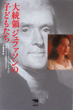 |
ヤングアダルト・アメリカ史 | ||||||
| 大統領ジェファソンの子どもたち | |||||||
| シャノン・ラニア（インタビュー・文）／ジェーン・フェルドマン（写真） 千葉茂樹訳 | |||||||
| 四六判 248頁 | |||||||
| 定価2520円（本体2400円） | |||||||
| 4-7949-6608-3 C0022 | |||||||
| アメリカの第三代大統領、独立宣言起草者として尊敬されるジェファソンには、黒人奴隷サリー・ヘミングズとの間に七人の子どもがいた。長く噂されながら、DNA鑑定でそのことが確定されたのは、1998年だった。二人の子孫の一人である青年が、アメリカの自由の歴史を担ったジェファソンの「家族」を訪ね歩き、それぞれの物語を聞き取った魂の書。 | |||||||
|
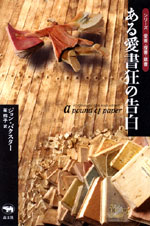 |
外国文学・読書 | ||||||
| ある愛書狂の告白 | |||||||
| ジョン・バクスター 笙玲子訳 | |||||||
| 四六判 360頁 | |||||||
| 定価2940円（本体2800円） | |||||||
| 4-7949-2662-6 C0397 | |||||||
|
本を読むだけでうさん臭く見られるオーストラリアの片田舎に生まれた少年が、いかにして愛書家になったか。ロンドン、合衆国、パリと移住しつつ本に熱狂を傾けた生涯を語る。目指す本をいかに入手するか。古書の価値の見分け方。コレクションのつくり方。海外の古書店主やブックハンター、蒐集家達の情熱がユーモアたっぷりに綴られた、本好き必読の一冊。 |
|||||||
|
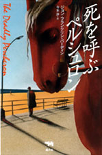 |
ミステリ | ||||||
| シリーズ名：晶文社ミステリ 死を呼ぶペルシュロン |
|||||||
| ジョン・フランクリン・バーディン 今本渉 訳 | |||||||
| 四六判 288頁 | |||||||
| 定価2100円 （本体2000円） | |||||||
| 4-7949-2741-X C0397 | |||||||
|
「先生、俺、きっと頭が変なんです」赤いハイビスカスを髪に挿して診察室に現れた青年は、自分は小人に雇われていると言った。青年の話に興味を引かれたマシューズ医師は、その小人に会いに行くが、やがて自身も悪夢のような事件に巻きこまれてしまう。『悪魔に食われろ青尾蠅』の作者が贈る強烈な心理的スリルと奇妙な味に満ちた異色ミステリ。 |
|||||||
|
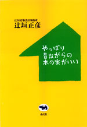
|
住宅 | ||||||
| やっぱり昔ながらの木の家がいい | |||||||
| 辻垣正彦 | |||||||
| 四六判 208頁 | |||||||
| 定価1680円（本体1600円） | |||||||
| 4-7949-6614-8 C0052 | |||||||
| 接着剤で貼りあわされた集成材や合板ではなく日本の森で育った無垢の木をつかうこと。柱や梁が外に見えている真壁構造であること。防蟻剤や塗料など石油化学製品をできるだけつかわないこと。──伝統的な木造住宅設計の第一人者が具体的に説く健康的で長持ちする家づくりの基本。ハウスメーカーの住宅や建売住宅にあきたらない人にすすめる。 | |||||||
|
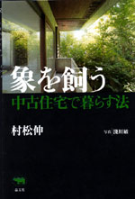
|
住宅・エッセイ | ||||||
| 象を飼う 中古住宅で暮らす法 | |||||||
| 村松伸 | |||||||
| 四六判 240頁 | |||||||
| 定価1890円（本体1800円） | |||||||
| 4-7949-6616-4 C0052 | |||||||
| 著者が購入した住宅は、女性建築家の草分けである故林雅子さん設計の家。それを購入できたのも、中古住宅だから。家選びのポイント、リノベーションのコツ、少しずつ家を整えていく楽しみ、四季折々の暮らしと子育て……。どんな家に住みたいのかとは、どんな暮らしがしたいのかということ。建築史の研究者がつづる中古住宅購入のススメ。 | |||||||
|
晶文社出版の本 TEL.03-5688-6881 |
|
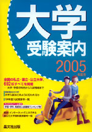 |
学校案内 | ||
| 大学受験案内 2005年度用 | |||
| 晶文社出版編集部編 | |||
| A5判 1392頁 | |||
| 定価2310円（本体2200円） | |||
| 4-7949-9765-5 C7037 | |||
| 大学案内の超定番！ 全国の国公私立大学をすべて収録。各大学の一般入試、推薦入試、AO入試など各種の入試情報を盛り込んで、さらに内容充実。入試難易ランキング表（代々木ゼミナール提供）、最新の学部・学科紹介、入試競争率、「大学入試はどのように行われるか」の解説など、大学を知るには、この1冊！ |
|
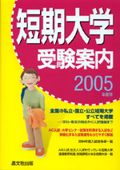 |
学校案内 | ||
| 短期大学受験案内 2005年度用 | |||
| 晶文社出版編集部編 | |||
| A5判 618頁 | |||
| 定価2100円（本体2000円） | |||
| 4-7949-9755-8 C7037 | |||
| 全国の私立・国立・公立のすべての短期大学を紹介。学科や専攻の特色から入試情報、取得資格、大学への編入制度などを詳しく掲載。巻頭には、AO入試や大学センター試験を利用する入試など多様化する短期大学の入試制度をわかりやすく解説。 2005年度版からは、各校の応募状況を各頁に掲載している。 |
|
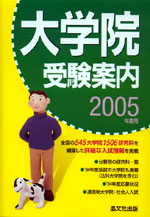 |
学校案内 | ||
| 大学院受験案内 2005年度用 | |||
| 晶文社出版編集部編 | |||
| A5判 976頁 | |||
| 定価3150円（本体3000円） | |||
| ISBN4-7949-9657-8 C0037 | |||
| 全国の545大学院1506研究科を網羅した詳細な入試情報を掲載。 ・'04年度新設の大学院も掲載(法科大学院を含む) ・ 通信制大学院・社会人入試も紹介 ・分野別の研究科一覧 ・'04年度応募状況(研究科・専攻別) |
|
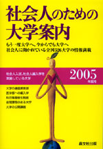 |
学校案内 | ||
| 社会人のための大学案内 2005年度用 | |||
| 晶文社出版編集部編 | |||
| A5判 240頁 | |||
| 定価1995円（本体1900円） | |||
| 4-7949-9489-3 C0037 | |||
| 全国526大学の社会人向け利用法ガイド、最新版。社会人入試、社会人編入学を中心に、通信教育部、医学部への編入学、公開講座など各大学の最新情報を紹介。学部別の社会人入試実施大学一覧、応募状況一覧も掲載しています。 |
|
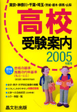 |
中学・学校案内 | ||
| 首都圏 高校受験案内 2005年度用 | |||
| 晶文社出版編集部編 | |||
| A5判 1512頁 | |||
| 定価2100円（本体2000円） | |||
| ISBN4-7949-9745-0 C6037 | |||
| 東京・神奈川・千葉・埼玉を中心に首都圏の高校を紹介。私立高校382校を、見開き2ページで紹介。その内容は、・卒業後の進路を見やすくグラフ化 ・大学への合格状況を過去3年間掲載 ・くわしく、わかりやすいランク別公立・私立の併願校 ・各校の特色の中で総合的な学習の取り組みや、土曜日の学校での過ごし方など、その他情報満載。巻末では'04年春の大学への合格状況、巻頭で制服の写真を324校紹介。 |
|
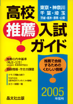 |
中学・学校案内 | ||
| 首都圏 高校推薦入試ガイド2005年度用 | |||
| 晶文社出版編集部編 | |||
| A5判 588頁 | |||
| 定価1995円（本体1900円） | |||
| ISBN4-7949-9375-7 C6037 | |||
| 東京・神奈川・千葉・埼玉で推薦入試を行っている学校をすべて紹介。茨城・栃木・群馬・山梨については主な高校を紹介。高校の推薦内申基準を明示。選抜方法の中の、作文の課題（'03年度）を紹介、また面接の質問内容について、主な項目を紹介。'03年度の大学への合格状況、指定校推薦の大学を紹介。すべてのクラブ活動および成績優秀なクラブを紹介。制服の写真を216校紹介。 |
|
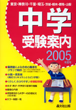 |
小学・学校案内 | ||
| 首都圏 中学受験案内 2005年度用 | |||
| 晶文社出版編集部編 | |||
| A5判 782頁 | |||
| 定価1995円（本体1900円） | |||
| ISBN4-7949-9735-3 C6037 | |||
| 首都圏の私立・国立中学校を紹介。中高一貫教育について各学校の取り組み方を「特色」の中で説明、さらに高校カリキュラムのさきどり学習を行っている学校は、図式化し見やすく表示。総合的な学習の取り組みや、土曜日の学校での過ごし方を紹介。くわしく、わかりやすい学力別・日程別併願校を掲載。併設高校から大学への合格状況を過去3年間掲載。制服の写真を163校紹介。 |
|
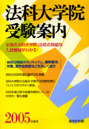 |
中学・学校案内 | ||
| 法科大学院受験案内 2005年度用 | |||
| 晶文社出版編集部編 | |||
| A5判 228頁 | |||
| 定価1890円（本体1800円） | |||
| 4-7949-7661-5 C0037 | |||
| 全国68校の法科大学院の最新情報がわかる！ 法科大学院の仕組みや新司法試験制度についてわかりやすく解説。各校の特色やカリキュラム、募集要項、学費、奨学金制度などを詳しく紹介した。試験日程一覧、開講予定キャンパス一覧も掲載。さらに各校の2004年度応募状況を掲載。 |
|
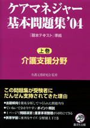 |
ケアマネジャー | ||
| ケアマネジャー基本問題集'04 (上巻)介護支援分野 | |||
| 介護支援研究会監修 | |||
| A5判 248頁 | |||
| 定価1680円（本体1600円） | |||
| 4-7949-7632-1 C0036 | |||
| 第7回介護支援専門員試験に向けての問題集。昨年度の介護保険制度の見直しに伴う大幅な改訂を施し、また『基本テキスト』改訂版に準拠して掲載頁を表記した。携帯学習に便利なA5の判型と充実した「ポイント解説」は、6回を重ねる過去の受験者から圧倒的な好評を博し、「この問題集の繰り返し学習だけで合格した」という声も多く寄せられている。 |
|
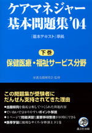 |
ケアマネジャー | ||
| ケアマネジャー基本問題集'04 (下巻)保健医療・福祉サービス分野 | |||
| 介護支援研究会監修 | |||
| A5判 312頁 | |||
| 定価1890円（本体1800円） | |||
| 4-7949-7633-X C0036 | |||
| 第7回介護支援専門員試験に向けての問題集。昨年度の介護保険制度の見直しに伴う大幅な改訂を施し、また『基本テキスト』改訂版に準拠して掲載頁を表記した。携帯学習に便利なA5の判型と充実した「ポイント解説」は、6回を重ねる過去の受験者から圧倒的な好評を博し、「この問題集の繰り返し学習だけで合格した」という声も多く寄せられている。 |